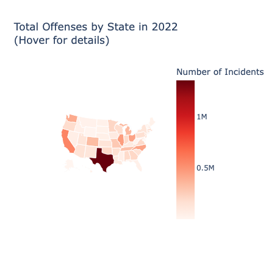

import plotly.graph_objects as go
import pandas as pd
import ipywidgets as widgets
from IPython.display import displayChoropleth Maps
Import the Necessary Libraries
State Abbreviation Mapping
state_abbrev = {
'ALABAMA': 'AL', 'ALASKA': 'AK', 'ARIZONA': 'AZ', 'ARKANSAS': 'AR', 'CALIFORNIA': 'CA',
'COLORADO': 'CO', 'CONNECTICUT': 'CT', 'DELAWARE': 'DE', 'FLORIDA': 'FL', 'GEORGIA': 'GA',
'HAWAII': 'HI', 'IDAHO': 'ID', 'ILLINOIS': 'IL', 'INDIANA': 'IN', 'IOWA': 'IA',
'KANSAS': 'KS', 'KENTUCKY': 'KY', 'LOUISIANA': 'LA', 'MAINE': 'ME', 'MARYLAND': 'MD',
'MASSACHUSETTS': 'MA', 'MICHIGAN': 'MI', 'MINNESOTA': 'MN', 'MISSISSIPPI': 'MS',
'MISSOURI': 'MO', 'MONTANA': 'MT', 'NEBRASKA': 'NE', 'NEVADA': 'NV', 'NEW HAMPSHIRE': 'NH',
'NEW JERSEY': 'NJ', 'NEW MEXICO': 'NM', 'NEW YORK': 'NY', 'NORTH CAROLINA': 'NC',
'NORTH DAKOTA': 'ND', 'OHIO': 'OH', 'OKLAHOMA': 'OK', 'OREGON': 'OR', 'PENNSYLVANIA': 'PA',
'RHODE ISLAND': 'RI', 'SOUTH CAROLINA': 'SC', 'SOUTH DAKOTA': 'SD', 'TENNESSEE': 'TN',
'TEXAS': 'TX', 'UTAH': 'UT', 'VERMONT': 'VT', 'VIRGINIA': 'VA', 'WASHINGTON': 'WA',
'WEST VIRGINIA': 'WV', 'WISCONSIN': 'WI', 'WYOMING': 'WY'
}Use Pandas to Alter Excel Sheet
data_path = "United_States_Offense_Type_by_Agency_2022.xlsx"
df = pd.read_excel(data_path, sheet_name='2022 Cities with Location')Aggregate data by state and sum up the crimes
aggregated_data = df.groupby('State').agg({
'Total\nOffenses': 'sum',
'Crimes\nAgainst\nPersons': 'sum',
'Crimes\nAgainst\nProperty': 'sum',
'Crimes\nAgainst\nSociety': 'sum'
}).reset_index()Convert state names to abbreviations
aggregated_data['State'] = aggregated_data['State'].map(state_abbrev)
for col in aggregated_data.columns:
if col != 'State':
aggregated_data[col] = aggregated_data[col].astype(float)
options = ["Total\nOffenses", "Crimes\nAgainst\nPersons", "Crimes\nAgainst\nProperty", "Crimes\nAgainst\nSociety"]
dropdown = widgets.Dropdown(options=options, description='Filter:')
def update_map(change):
crime_type = change['new']
aggregated_data['text'] = aggregated_data['State'] + '<br>' + crime_type + ' ' + aggregated_data[crime_type].astype(str)
# Create a new choropleth figure
fig = go.Figure(data=go.Choropleth(
locations=aggregated_data['State'],
z=aggregated_data[crime_type],
locationmode='USA-states',
colorscale='Reds',
autocolorscale=False,
text=aggregated_data['text'], # hover text
marker_line_color='white', # line markers between states
colorbar_title="Number of Incidents"
))
fig.update_layout(
title_text=f'{crime_type} by State in 2022<br>(Hover for details)',
geo=dict(
scope='usa',
projection=go.layout.geo.Projection(type='albers usa'),
showlakes=True, # lakes
lakecolor='rgb(255, 255, 255)'),
)
fig.show()
dropdown.observe(update_map, names='value')
display(dropdown)
update_map({'new': dropdown.value}) # Trigger initial map displayUnable to display output for mime type(s): application/vnd.plotly.v1+json